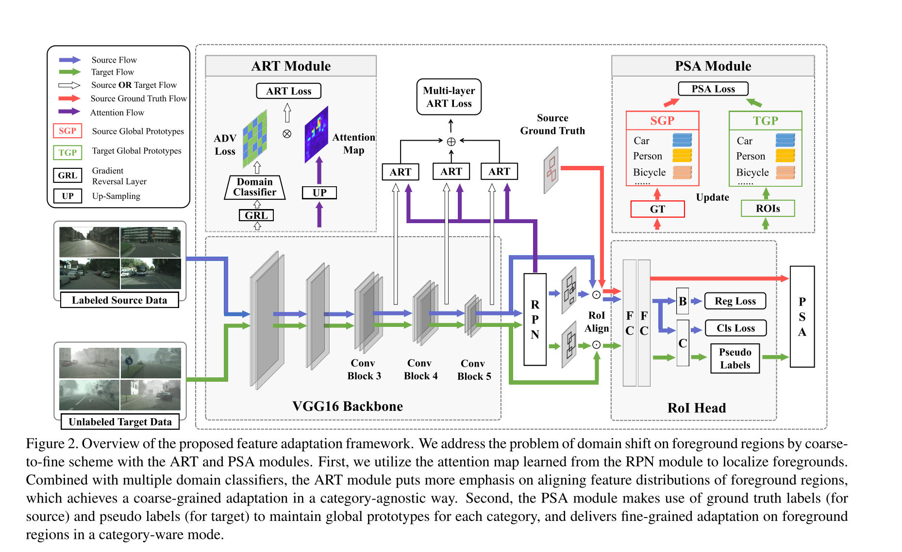
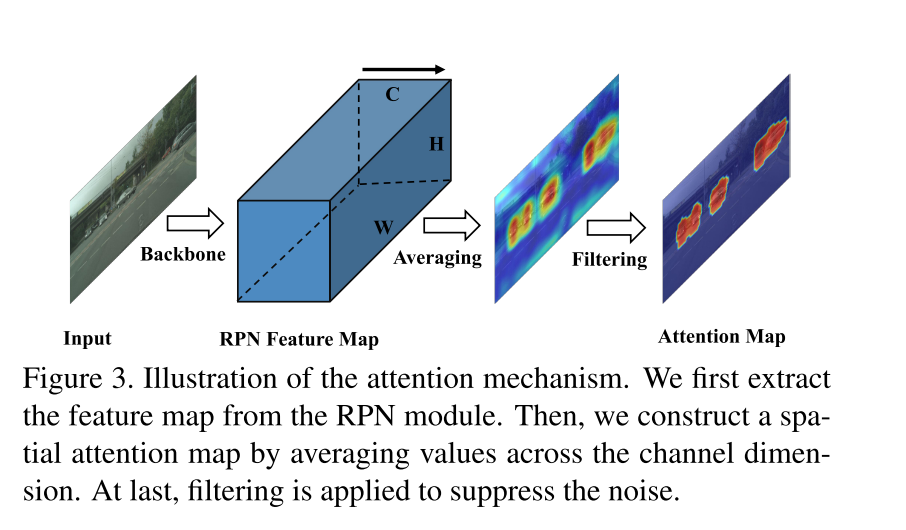
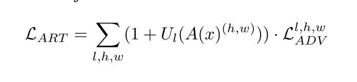
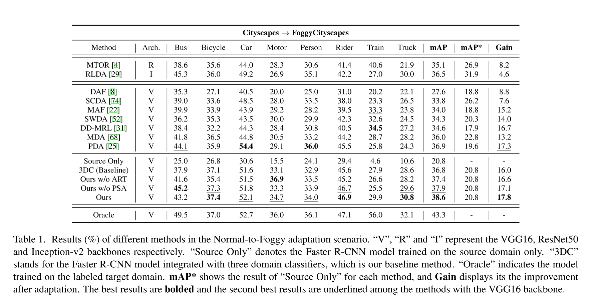

URL: https://arxiv.org/abs/2003.10275
做DA场景的物体检测，同样还是分image level和instance level，image level的改进是不再关注全图而是只关注图片的前景区域，instance level的改进是参考few shot领域的protonet维护一些类别中心，然后监督不同domain的同一类的类别中心. 整体框架没有太大变化。

Coarse Feature Adaptation: ART Block, 在Image Level做DA，不同的地方是把注意力放在全图的前景区域而不是全图所有区域, 一般Image Level的DA是做一个Domain Classifier用对抗学习的方式去去除Domain相关的信息，ART则是用RPN的feature map得到一个前景的mask拍到loss上做attention, mask的生成比较简单用RPN的feature取平均得到hxwx1的mask，然后去mask的平均mean然后突出mask上大于mean的pixel:

ART会作用于不同的level的feature map，所以scale不一致的情况下直接up sample就好:

Fine Feature Adaptation: PSA Block, 参考Few Shot任务里的ProtoNet，对于每一类的数据都维护一个类别中心, Fr是Fast RCNN那一支的第二个FC，对于source/target domain处理方式略有不同，对于source domain因为有标注所以直接上gt框去获得类别表示，target domain因为没有标注所以就用的dt框去获得类别表示:

然后考虑到det任务单卡的batch size比较小，所以作者维护了一个全局proto, 每一个mini batch下都会动态的去更新这个类别中心(EMA):

贴一下Foggy Cityscapes上的点，似乎还是比较高的:
